14 Charts: series
Charts of values along x: a band between two bounds (ribbon), a fitted curve with its uncertainty band (smooth) and price candles (candlestick). Each chart lists the mapping keys it reads, its own options and the shared option groups it takes (documented once in the Shared options chapter).
(ns reference.charts-series
(:require [fastmath.random :as r]
[cljplot2.chart :as chart]
[cljplot2.core :as plot]
[cljplot2.describe :as describe]
[notebook-utils :as nu]))Data: Old Faithful geyser eruptions, R datasets package faithful (Härdle 1991; Azzalini & Bowman 1990); licence: Part of R (GPL-2 | GPL-3).
(def faithful (nu/dataset :faithful))| eruptions | waiting |
|---|---|
| 3.6 | 79 |
| 1.8 | 54 |
| 3.333 | 74 |
| 2.283 | 62 |
| 4.533 | 85 |
| 2.883 | 55 |
| 4.7 | 88 |
| 3.6 | 85 |
| 1.95 | 51 |
| 4.35 | 85 |
| 1.833 | 54 |
| 3.917 | 84 |
| 4.2 | 78 |
| 1.75 | 47 |
| 4.7 | 83 |
| 2.167 | 52 |
| 1.75 | 62 |
| 4.8 | 84 |
| 1.6 | 52 |
| 4.25 | 79 |
| 1.8 | 51 |
| 1.75 | 47 |
| 3.45 | 78 |
| 3.067 | 69 |
| 4.533 | 74 |
| 3.6 | 83 |
| 1.967 | 55 |
| 4.083 | 76 |
| 3.85 | 78 |
| 4.433 | 79 |
| 4.3 | 73 |
| 4.467 | 77 |
| 3.367 | 66 |
| 4.033 | 80 |
| 3.833 | 74 |
| 2.017 | 52 |
| 1.867 | 48 |
| 4.833 | 80 |
| 1.833 | 59 |
| 4.783 | 90 |
| 4.35 | 80 |
| 1.883 | 58 |
| 4.567 | 84 |
| 1.75 | 58 |
| 4.533 | 73 |
| 3.317 | 83 |
| 3.833 | 64 |
| 2.1 | 53 |
| 4.633 | 82 |
| 2 | 59 |
| 4.8 | 75 |
| 4.716 | 90 |
| 1.833 | 54 |
| 4.833 | 80 |
| 1.733 | 54 |
| 4.883 | 83 |
| 3.717 | 71 |
| 1.667 | 64 |
| 4.567 | 77 |
| 4.317 | 81 |
| 2.233 | 59 |
| 4.5 | 84 |
| 1.75 | 48 |
| 4.8 | 82 |
| 1.817 | 60 |
| 4.4 | 92 |
| 4.167 | 78 |
| 4.7 | 78 |
| 2.067 | 65 |
| 4.7 | 73 |
| 4.033 | 82 |
| 1.967 | 56 |
| 4.5 | 79 |
| 4 | 71 |
| 1.983 | 62 |
| 5.067 | 76 |
| 2.017 | 60 |
| 4.567 | 78 |
| 3.883 | 76 |
| 3.6 | 83 |
| 4.133 | 75 |
| 4.333 | 82 |
| 4.1 | 70 |
| 2.633 | 65 |
| 4.067 | 73 |
| 4.933 | 88 |
| 3.95 | 76 |
| 4.517 | 80 |
| 2.167 | 48 |
| 4 | 86 |
| 2.2 | 60 |
| 4.333 | 90 |
| 1.867 | 50 |
| 4.817 | 78 |
| 1.833 | 63 |
| 4.3 | 72 |
| 4.667 | 84 |
| 3.75 | 75 |
| 1.867 | 51 |
| 4.9 | 82 |
| … | … |
Data: VIX daily open, high, low and close values, vega-datasets 3.3.1 ohlc.json (https://cdn.jsdelivr.net/npm/vega-datasets@3.3.1/data/ohlc.json); original: Yahoo Finance VIX Data, CBOE - VIX Historical Data; licence: none listed - see vega-datasets (cite Vega as the source).
(def ohlc (nu/dataset :ohlc))| date | open | high | low | close | signal | ret |
|---|---|---|---|---|---|---|
| 2009-06-01 | 28.7 | 30.05 | 28.45 | 30.04 | short | -4.89396411092985 |
| 2009-06-02 | 30.04 | 30.13 | 28.3 | 29.63 | short | -0.322580645161295 |
| 2009-06-03 | 29.62 | 31.79 | 29.62 | 31.02 | short | 3.68663594470045 |
| 2009-06-04 | 31.02 | 31.02 | 29.92 | 30.18 | short | 4.51010886469673 |
| 2009-06-05 | 29.39 | 30.81 | 28.85 | 29.62 | short | 6.08424336973478 |
| 2009-06-08 | 30.84 | 31.82 | 26.41 | 29.77 | short | 1.2539184952978 |
| 2009-06-09 | 29.77 | 29.77 | 27.79 | 28.27 | short | -5.02431118314424 |
| 2009-06-10 | 26.9 | 29.74 | 26.9 | 28.46 | short | -5.46623794212217 |
| 2009-06-11 | 27.36 | 28.11 | 26.81 | 28.11 | short | -8.3743842364532 |
| 2009-06-12 | 28.08 | 28.5 | 27.73 | 28.15 | short | -5.52763819095477 |
| 2009-06-15 | 29.7 | 31.09 | 29.64 | 30.81 | long | 3.4920634920635 |
| 2009-06-16 | 30.81 | 32.75 | 30.07 | 32.68 | short | 0.155038759689914 |
| 2009-06-17 | 31.19 | 32.77 | 30.64 | 31.54 | short | 5.82822085889571 |
| 2009-06-18 | 31.54 | 31.54 | 29.6 | 30.03 | short | 8.17610062893082 |
| 2009-06-19 | 29.16 | 29.32 | 27.56 | 27.99 | short | 8.59872611464968 |
| 2009-06-22 | 30.4 | 32.05 | 30.3 | 31.17 | short | 15.4907975460123 |
| 2009-06-23 | 31.3 | 31.54 | 27.83 | 30.58 | short | 11.7370892018779 |
| 2009-06-24 | 30.58 | 30.58 | 28.79 | 29.05 | long | -10.4234527687296 |
| 2009-06-25 | 29.45 | 29.56 | 26.3 | 26.36 | long | 0 |
| 2009-06-26 | 27.09 | 27.22 | 25.76 | 25.93 | long | 0 |
| 2009-06-29 | 25.93 | 27.18 | 25.29 | 25.35 | long | 5.26315789473684 |
| 2009-06-30 | 25.36 | 27.38 | 25.02 | 26.35 | long | 6.73758865248228 |
| 2009-07-01 | 25.73 | 26.31 | 24.8 | 26.22 | long | 7.83645655877341 |
| 2009-07-02 | 26.22 | 28.62 | 26.22 | 27.95 | long | 2.76422764227643 |
| 2009-07-06 | 30.32 | 30.6 | 28.99 | 29 | short | -2.14521452145214 |
| 2009-07-07 | 29 | 30.94 | 28.9 | 30.85 | short | 3.03514376996805 |
| 2009-07-08 | 30.85 | 33.05 | 30.43 | 31.3 | short | 5.68720379146919 |
| 2009-07-09 | 30.23 | 30.49 | 29.28 | 29.78 | short | 8.22784810126583 |
| 2009-07-10 | 29.78 | 30.34 | 28.82 | 29.02 | short | 8.64779874213836 |
| 2009-07-13 | 28.36 | 29.24 | 25.42 | 26.31 | short | 7.32899022801303 |
| 2009-07-14 | 26.31 | 26.84 | 24.99 | 25.02 | short | 7.30897009966778 |
| 2009-07-15 | 25.05 | 26.06 | 23.83 | 25.89 | neutral | 0 |
| 2009-07-16 | 25.96 | 26.18 | 24.51 | 25.42 | long | -9.82758620689656 |
| 2009-07-17 | 25.42 | 25.55 | 23.88 | 24.34 | long | -10.8433734939759 |
| 2009-07-20 | 25.06 | 25.42 | 24.26 | 24.4 | long | -7.55711775043936 |
| 2009-07-21 | 24.28 | 25.14 | 23.81 | 23.87 | long | -2.5089605734767 |
| 2009-07-22 | 24.05 | 24.14 | 23.24 | 23.47 | long | 0.915750915750916 |
| 2009-07-23 | 23.71 | 24.05 | 23.21 | 23.43 | long | 2.47148288973383 |
| 2009-07-24 | 23.87 | 23.87 | 23 | 23.09 | long | 4.22264875239922 |
| 2009-07-27 | 24.06 | 24.86 | 24.02 | 24.28 | long | -0.189393939393929 |
| 2009-07-28 | 24.28 | 25.61 | 24.28 | 25.01 | long | -4.37956204379562 |
| 2009-07-29 | 25.47 | 26.18 | 25.41 | 25.61 | long | -4.48504983388705 |
| 2009-07-30 | 25.4 | 25.76 | 24.85 | 25.4 | long | -1.70357751277683 |
| 2009-07-31 | 25.4 | 26.22 | 24.93 | 25.92 | short | 5.06756756756757 |
14.1 ribbon
A band per group between a lower and an upper bound at each x - an interval, a range of values, an envelope.
| Option | Type | Default | Description |
|---|---|---|---|
| :x (required) | a keyword, a function or a categorical marker of one | x position (data units) | |
| :ymin (required) | a keyword, a function or a categorical marker of one | lower bound of the band (data units) | |
| :ymax (required) | a keyword, a function or a categorical marker of one | upper bound of the band (data units) | |
| :color | a keyword, a function or a categorical marker of one or nil | band colour per group | |
| :dash | a keyword, a function or a categorical marker of one or nil | edge dash style per group | |
| :pattern | a keyword, a function or a categorical marker of one or nil | fill pattern per group | |
| :group | a keyword, a function or a categorical marker of one or nil | groups without a visual aesthetic, each its own band |
(def bands (for [g ["low" "high"] t (range 0 25)]
(let [c (+ (if (= g "low") 1.0 4.0) (Math/sin (* 0.3 t)))
w (+ 0.4 (* 0.04 t))]
{:group g :t t :lo (- c w) :mid c :hi (+ c w)})))| group | t | lo | mid | hi |
|---|---|---|---|---|
| low | 0 | 0.6 | 1.0 | 1.4 |
| low | 1 | 0.8555202066613397 | 1.2955202066613396 | 1.7355202066613395 |
| low | 2 | 1.0846424733950353 | 1.5646424733950353 | 2.0446424733950352 |
| low | 3 | 1.2633269096274833 | 1.7833269096274833 | 2.3033269096274833 |
| low | 4 | 1.3720390859672262 | 1.9320390859672263 | 2.4920390859672263 |
| low | 5 | 1.3974949866040545 | 1.9974949866040546 | 2.5974949866040546 |
| low | 6 | 1.333847630878195 | 1.9738476308781951 | 2.6138476308781953 |
| low | 7 | 1.1832093666488737 | 1.8632093666488738 | 2.543209366648874 |
| low | 8 | 0.9554631805511511 | 1.675463180551151 | 2.3954631805511513 |
| low | 9 | 0.6673798802338302 | 1.4273798802338302 | 2.1873798802338302 |
| low | 10 | 0.3411200080598671 | 1.1411200080598671 | 1.9411200080598672 |
| low | 11 | 0.0022543058567516816 | 0.8422543058567518 | 1.6822543058567518 |
| low | 12 | -0.3225204432948521 | 0.5574795567051479 | 1.437479556705148 |
| low | 13 | -0.6077661591839738 | 0.31223384081602623 | 1.2322338408160263 |
| low | 14 | -0.8315757724135883 | 0.1284242275864118 | 1.0884242275864118 |
| low | 15 | -0.977530117665097 | 0.02246988233490299 | 1.022469882334903 |
| low | 16 | -1.0361646088358407 | 0.0038353911641593186 | 1.0438353911641594 |
| low | 17 | -1.0058146823277325 | 0.07418531767226755 | 1.1541853176722676 |
| low | 18 | -0.8927644875559878 | 0.2272355124440123 | 1.3472355124440125 |
| low | 19 | -0.7106855425976377 | 0.4493144574023624 | 1.6093144574023626 |
| low | 20 | -0.47941549819892604 | 0.7205845018010741 | 1.9205845018010743 |
| low | 21 | -0.22318609951565027 | 1.0168139004843497 | 2.2568139004843495 |
| low | 22 | 0.031541363513377885 | 1.311541363513378 | 2.591541363513378 |
| low | 23 | 0.25843976438819927 | 1.5784397643881993 | 2.8984397643881996 |
| low | 24 | 0.4336678638491529 | 1.7936678638491528 | 3.1536678638491527 |
| high | 0 | 3.6 | 4.0 | 4.4 |
| high | 1 | 3.8555202066613394 | 4.295520206661339 | 4.73552020666134 |
| high | 2 | 4.084642473395035 | 4.564642473395035 | 5.044642473395036 |
| high | 3 | 4.263326909627484 | 4.783326909627483 | 5.303326909627483 |
| high | 4 | 4.372039085967225 | 4.932039085967226 | 5.492039085967226 |
| high | 5 | 4.397494986604054 | 4.997494986604054 | 5.597494986604055 |
| high | 6 | 4.3338476308781955 | 4.973847630878195 | 5.613847630878195 |
| high | 7 | 4.183209366648874 | 4.863209366648873 | 5.543209366648873 |
| high | 8 | 3.955463180551151 | 4.675463180551151 | 5.39546318055115 |
| high | 9 | 3.66737988023383 | 4.42737988023383 | 5.18737988023383 |
| high | 10 | 3.3411200080598675 | 4.141120008059867 | 4.941120008059867 |
| high | 11 | 3.002254305856752 | 3.842254305856752 | 4.682254305856752 |
| high | 12 | 2.677479556705148 | 3.557479556705148 | 4.437479556705148 |
| high | 13 | 2.392233840816026 | 3.312233840816026 | 4.2322338408160265 |
| high | 14 | 2.168424227586412 | 3.128424227586412 | 4.088424227586412 |
| high | 15 | 2.022469882334903 | 3.022469882334903 | 4.022469882334903 |
| high | 16 | 1.9638353911641593 | 3.0038353911641593 | 4.043835391164159 |
| high | 17 | 1.9941853176722675 | 3.0741853176722675 | 4.154185317672267 |
| high | 18 | 2.1072355124440123 | 3.2272355124440124 | 4.347235512444012 |
| high | 19 | 2.2893144574023623 | 3.4493144574023624 | 4.609314457402363 |
| high | 20 | 2.520584501801074 | 3.720584501801074 | 4.920584501801074 |
| high | 21 | 2.776813900484349 | 4.016813900484349 | 5.2568139004843495 |
| high | 22 | 3.0315413635133774 | 4.311541363513378 | 5.591541363513378 |
| high | 23 | 3.258439764388199 | 4.578439764388199 | 5.8984397643882 |
| high | 24 | 3.4336678638491525 | 4.793667863849152 | 6.153667863849153 |
(plot/render-image {:data bands
:mapping {:x :t :ymin :lo :ymax :hi :color :group}
:charts [(chart/ribbon) (chart/line {:mapping {:y :mid}})]}
{:width 600 :height 340})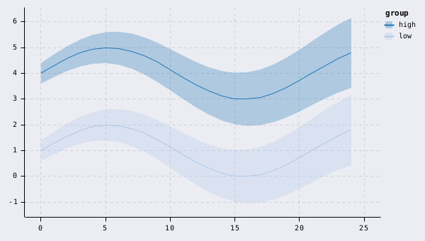
Its options: the band’s colour and fill, its edges, and a gradient instead of a flat fill:
| Option | Type | Default | Description |
|---|---|---|---|
| :color | a clojure2d color or :none | [69 117 180] | band colour (a mapped :color wins) |
| :fill | :color or a clojure2d color or :none | :color | band fill: :color (the band colour at :alpha), a colour or :none |
| :alpha | a number in [0 1] | 0.3 | fill opacity of :fill :color |
| :stroke-color | :color or a clojure2d color or :none | :none | colour of both bounds' edges: a colour, :none or :color (the band colour) |
| :stroke-width | a non-negative number | 1 | edge width in pixels |
| :dash | :none, a dash style (:dashed :dot-dash :dot-dot-dash :dotted :long-dash :loose-dot :solid :two-dash) or a sequence of positive numbers or nil | :none | dash style of the edges (a mapped :dash wins) |
| :fill-gradient | a clojure2d gradient: a preset keyword, a colour list or a function | clojure2d gradient (preset, colours or function of t) filling the bands; wins over :fill | |
| :fill-gradient-axis | one of :x :y | :x | axis the :fill-gradient runs along, over that scale's range (needs :fill-gradient) |
| :padding | map of one of :x :y to [lo hi], non-negative numbers | 0.05 on every side | padding of the data span per position axis, {:x [lo hi] :y [lo hi]} fractions of the span |
(def band (filter #(= "high" (:group %)) bands))| group | t | lo | mid | hi |
|---|---|---|---|---|
| high | 0 | 3.6 | 4.0 | 4.4 |
| high | 1 | 3.8555202066613394 | 4.295520206661339 | 4.73552020666134 |
| high | 2 | 4.084642473395035 | 4.564642473395035 | 5.044642473395036 |
| high | 3 | 4.263326909627484 | 4.783326909627483 | 5.303326909627483 |
| high | 4 | 4.372039085967225 | 4.932039085967226 | 5.492039085967226 |
| high | 5 | 4.397494986604054 | 4.997494986604054 | 5.597494986604055 |
| high | 6 | 4.3338476308781955 | 4.973847630878195 | 5.613847630878195 |
| high | 7 | 4.183209366648874 | 4.863209366648873 | 5.543209366648873 |
| high | 8 | 3.955463180551151 | 4.675463180551151 | 5.39546318055115 |
| high | 9 | 3.66737988023383 | 4.42737988023383 | 5.18737988023383 |
| high | 10 | 3.3411200080598675 | 4.141120008059867 | 4.941120008059867 |
| high | 11 | 3.002254305856752 | 3.842254305856752 | 4.682254305856752 |
| high | 12 | 2.677479556705148 | 3.557479556705148 | 4.437479556705148 |
| high | 13 | 2.392233840816026 | 3.312233840816026 | 4.2322338408160265 |
| high | 14 | 2.168424227586412 | 3.128424227586412 | 4.088424227586412 |
| high | 15 | 2.022469882334903 | 3.022469882334903 | 4.022469882334903 |
| high | 16 | 1.9638353911641593 | 3.0038353911641593 | 4.043835391164159 |
| high | 17 | 1.9941853176722675 | 3.0741853176722675 | 4.154185317672267 |
| high | 18 | 2.1072355124440123 | 3.2272355124440124 | 4.347235512444012 |
| high | 19 | 2.2893144574023623 | 3.4493144574023624 | 4.609314457402363 |
| high | 20 | 2.520584501801074 | 3.720584501801074 | 4.920584501801074 |
| high | 21 | 2.776813900484349 | 4.016813900484349 | 5.2568139004843495 |
| high | 22 | 3.0315413635133774 | 4.311541363513378 | 5.591541363513378 |
| high | 23 | 3.258439764388199 | 4.578439764388199 | 5.8984397643882 |
| high | 24 | 3.4336678638491525 | 4.793667863849152 | 6.153667863849153 |
(plot/render-image (plot/arrange [{:data band :mapping {:x :t :ymin :lo :ymax :hi}
:charts [(chart/ribbon {:color [200 80 40] :alpha 0.5})]
:labels {:title ":color, :alpha 0.5"}}
{:data band :mapping {:x :t :ymin :lo :ymax :hi}
:charts [(chart/ribbon {:fill :none :stroke-color :color :stroke-width 2 :dash :dashed})]
:labels {:title ":fill :none, dashed edges"}}
{:data band :mapping {:x :t :ymin :lo :ymax :hi}
:charts [(chart/ribbon {:fill-gradient [:yellow :purple] :fill-gradient-axis :y})]
:labels {:title ":fill-gradient along y"}}]
{:columns 3})
{:width 1000 :height 300})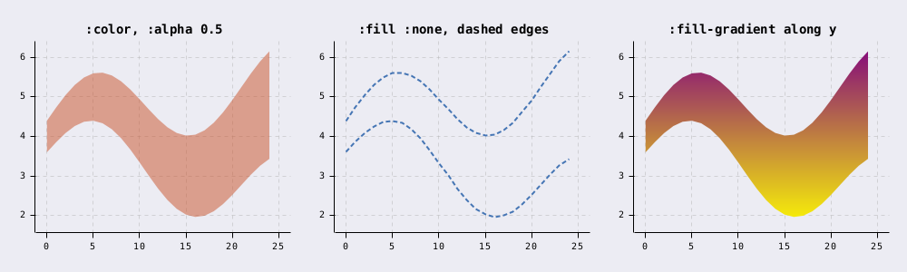
A gradient along x instead (over the x scale’s range), and the padding of the data span - none on x, a third of the span on y:
(plot/render-image (plot/arrange [{:data band :mapping {:x :t :ymin :lo :ymax :hi}
:charts [(chart/ribbon {:fill-gradient [:yellow :purple] :fill-gradient-axis :x})]
:labels {:title ":fill-gradient-axis :x"}}
{:data band :mapping {:x :t :ymin :lo :ymax :hi}
:charts [(chart/ribbon {:padding {:x [0 0] :y [0.33 0.33]}})]
:labels {:title ":padding {:x [0 0] :y [0.33 0.33]}"}}]
{:columns 2})
{:width 800 :height 300})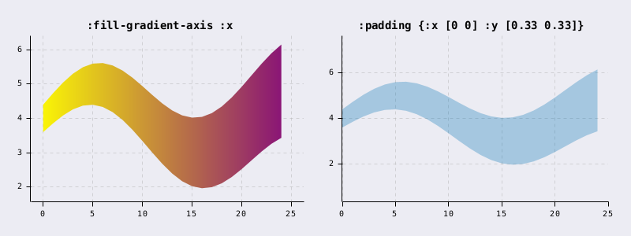
Shared options: Fill patterns (:pattern :pattern-color); Data and mapping (:data :mapping); Curves (:interpolator :interpolator-params :sample-step).
14.2 smooth
A curve fitted to the rows of each group, by default with a confidence band.
| Option | Type | Default | Description |
|---|---|---|---|
| :x (required) | a keyword, a function or a categorical marker of one | x position (data units) | |
| :y (required) | a keyword, a function or a categorical marker of one | y value to fit (data units) | |
| :color | a keyword, a function or a categorical marker of one or nil | curve and band colour per group | |
| :dash | a keyword, a function or a categorical marker of one or nil | curve dash style per group | |
| :pattern | a keyword, a function or a categorical marker of one or nil | band fill pattern per group | |
| :group | a keyword, a function or a categorical marker of one or nil | groups without a visual aesthetic, each its own fit |
(plot/render-image {:data faithful
:mapping {:x :eruptions :y :waiting}
:charts [(chart/scatter) (chart/smooth)]
:labels {:x "eruptions [min]" :y "waiting [min]"}}
{:width 600 :height 360})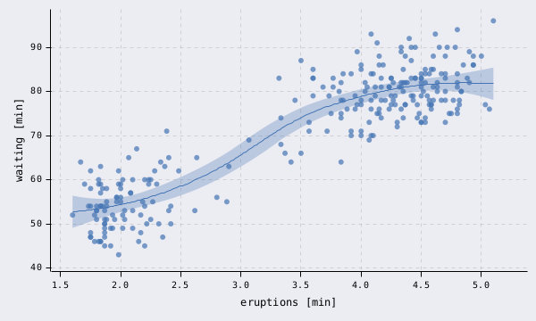
14.2.1 Fit
The fit method and its parameters, the number of points the curve is evaluated at, and whether each group’s fit spans only its own x range:
| Option | Type | Default | Description |
|---|---|---|---|
| :method | a function (fn [xs ys] f) or one of [:akima :b-spline :barycentric :cir :cubic :cubic-smoothing :divided-difference :glm :gp :kriging :linear :lm :loess :microsphere-projection :monotone :neville :pava :pchip :polynomial :rbf :shepard :sprague :step :step-after :step-before] | :loess | fit method: :loess, :lm, :glm, :gp, another fastmath 1D interpolation method or a function (fn [xs ys] f) |
| :method-params | map of keyword to any value or nil | options of the method (e.g. loess :bandwidth and :degree, lm :degree), else its extra argument | |
| :n | integer, >= 2 or nil | 200 | number of grid points the curve is evaluated at |
| :full-range | true or false or nil | false | fit over the plot's x :domain when given, else the x range of all groups of the panel (false - each group's x range) |
| :padding | map of one of :x :y to [lo hi], non-negative numbers | 0.05 on every side | padding of the data span per position axis, {:x [lo hi] :y [lo hi]} fractions of the span |
(plot/render-image (plot/arrange [{:data faithful :mapping {:x :eruptions :y :waiting}
:charts [(chart/scatter) (chart/smooth {:method :lm})]
:labels {:title ":method :lm"}}
{:data faithful :mapping {:x :eruptions :y :waiting}
:charts [(chart/scatter) (chart/smooth {:method :lm :method-params {:degree 3}})]
:labels {:title ":lm, :method-params {:degree 3}"}}
{:data faithful :mapping {:x :eruptions :y :waiting}
:charts [(chart/scatter) (chart/smooth {:method-params {:bandwidth 0.2}})]
:labels {:title ":loess, :bandwidth 0.2"}}]
{:columns 3})
{:width 1000 :height 320})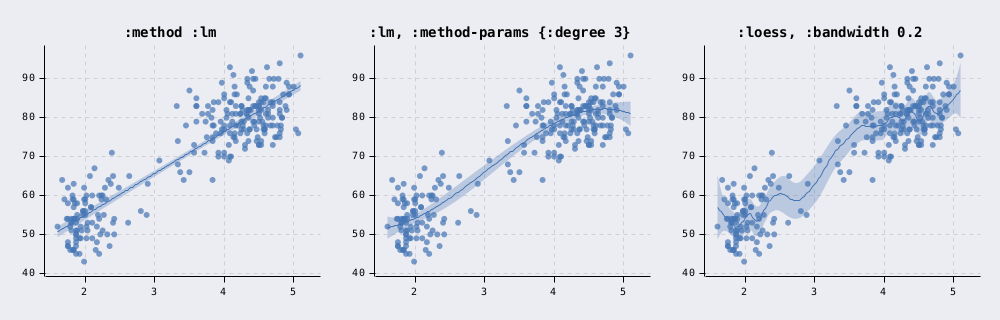
The curve sampled at only :n 6 points (a polyline), and two groups - short and long eruptions - fitted over their own x ranges or, with :full-range true, over the range of both (and the panel without padding on x):
(plot/render-image (plot/arrange [{:data faithful :mapping {:x :eruptions :y :waiting}
:charts [(chart/scatter) (chart/smooth {:n 6})]
:labels {:title ":n 6"}}
{:data faithful
:mapping {:x :eruptions :y :waiting :color #(if (> (:eruptions %) 3) "long" "short")}
:charts [(chart/scatter) (chart/smooth {:method :lm})]
:labels {:title ":full-range false (default)"}
:legend false}
{:data faithful
:mapping {:x :eruptions :y :waiting :color #(if (> (:eruptions %) 3) "long" "short")}
:charts [(chart/scatter) (chart/smooth {:method :lm :full-range true :padding {:x [0 0]}})]
:labels {:title ":full-range true, :padding x 0"}
:legend false}]
{:columns 3})
{:width 1000 :height 320})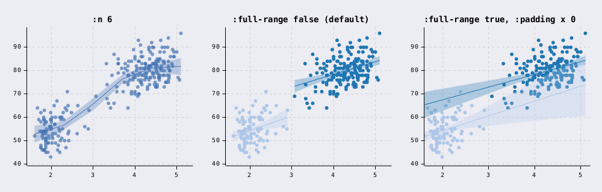
14.2.2 Band
The band around the curve: confidence or prediction, nested levels, a bootstrap (seeded here), or none, and its fill:
| Option | Type | Default | Description |
|---|---|---|---|
| :fill | :color or a clojure2d color or :none | :color | band fill: :color (the line colour at :alpha), a colour or :none (no band, as :band :none) |
| :alpha | a number in [0 1] | 0.3 | band fill opacity of :fill :color |
| :band | one of :confidence :prediction :bootstrap :none | :confidence for :loess, :lm, :glm and :gp, else :none | band around the curve: :confidence, :prediction (:lm), :bootstrap or :none |
| :level | a number in (0 1) or vector of a number in (0 1) (at least 1) | 0.95 | confidence level of the band in (0, 1), or a vector of levels (nested bands) |
| :bootstrap | map | options of the :band :bootstrap (see fastmath.interpolation/bootstrap) | |
| :bootstrap :samples | a positive integer | 200 | number of bootstrap samples |
| :bootstrap :rng | a fastmath random generator | an unseeded generator (builds differ) | random number generator of the samples (seeded for reproducible plots) |
| :bootstrap :ci | one of :basic :bc :normal :percentile | :percentile | confidence interval kind of a band point |
| :bootstrap :estimation | keyword | :legacy | quantile estimation strategy of the interval (not used by :normal) |
(plot/render-image (plot/arrange [{:data faithful :mapping {:x :eruptions :y :waiting}
:charts [(chart/scatter) (chart/smooth {:method :lm :band :prediction})]
:labels {:title ":band :prediction"}}
{:data faithful :mapping {:x :eruptions :y :waiting}
:charts [(chart/scatter) (chart/smooth {:level [0.5 0.95 0.999] :alpha 0.2})]
:labels {:title ":level [0.5 0.95 0.999]"}}
{:data faithful :mapping {:x :eruptions :y :waiting}
:charts [(chart/scatter)
(chart/smooth {:band :bootstrap :fill [200 80 40 90]
:bootstrap {:samples 100 :rng (r/rng :mersenne 3)}})]
:labels {:title ":band :bootstrap"}}]
{:columns 3})
{:width 1000 :height 320})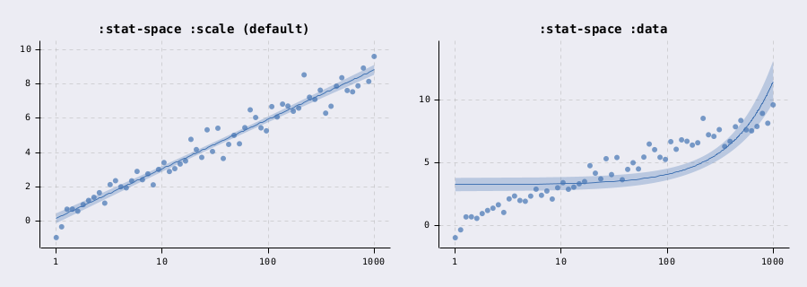
The default band of a fitted method, given explicitly (:band :confidence), and no band (:band :none):
(plot/render-image (plot/arrange [{:data faithful :mapping {:x :eruptions :y :waiting}
:charts [(chart/scatter) (chart/smooth {:method :lm :band :confidence})]
:labels {:title ":band :confidence"}}
{:data faithful :mapping {:x :eruptions :y :waiting}
:charts [(chart/scatter) (chart/smooth {:band :none})]
:labels {:title ":band :none"}}]
{:columns 2})
{:width 800 :height 300})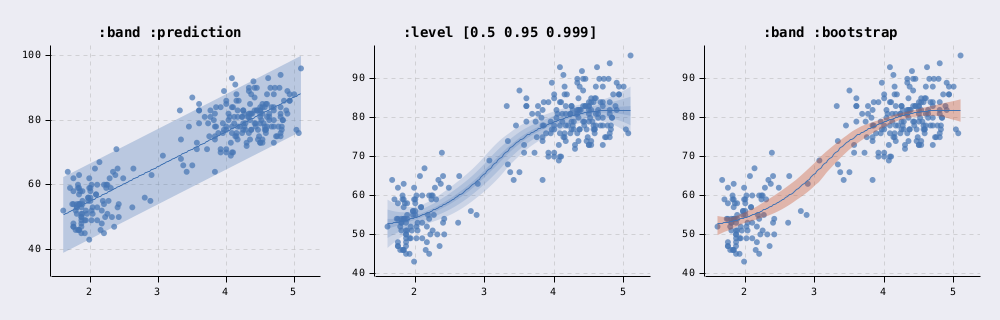
Shared options: Line style (:color :width :dash); Fill patterns (:pattern :pattern-color); Data and mapping (:data :mapping).
14.3 candlestick
A candle per row: a wick from low to high and a body from open to close, coloured by direction. The dates here are text, so each trading day gets a band (no gaps for weekends).
| Option | Type | Default | Description |
|---|---|---|---|
| :x (required) | a keyword, a function or a categorical marker of one | x position (data units) | |
| :open (required) | a keyword, a function or a categorical marker of one | opening price | |
| :high (required) | a keyword, a function or a categorical marker of one | highest price | |
| :low (required) | a keyword, a function or a categorical marker of one | lowest price | |
| :close (required) | a keyword, a function or a categorical marker of one | closing price |
(plot/render-image {:data ohlc
:mapping {:x :date :open :open :high :high :low :low :close :close}
:charts [(chart/candlestick)]
:labels {:y "VIX"}}
{:width 700 :height 360})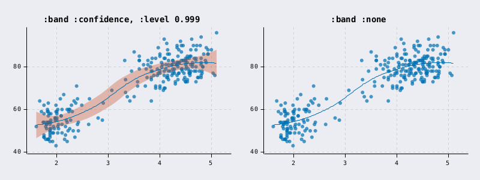
Its options: the up and down colours and patterns, body and wick widths, and the OHLC bar style:
| Option | Type | Default | Description |
|---|---|---|---|
| :up-color | a clojure2d color or :none | [26 152 80] | colour of a candle closing at or above its open |
| :down-color | a clojure2d color or :none | [215 48 39] | colour of a candle closing below its open |
| :body-width | a number in [0 1] | 0.7 | body width, a fraction of the smallest pixel gap between distinct x (of a band's width on a bands scale) |
| :wick-width | a non-negative number | 1 | wick (and OHLC bar) width in pixels |
| :stroke-color | a clojure2d color or :none | :none | body outline colour: a colour or :none |
| :up-pattern | a pattern name (:back-hatch :cross :dense-dots :diagonal-cross :dots :hatch :horizontal :solid :vertical) or a pattern map | :solid | pattern drawn over the bodies of up candles |
| :down-pattern | a pattern name (:back-hatch :cross :dense-dots :diagonal-cross :dots :hatch :horizontal :solid :vertical) or a pattern map | :solid | pattern drawn over the bodies of down candles |
| :pattern-color | :darker or a clojure2d color or :none | :darker | pattern ink: a colour, :none or :darker (the darkened body colour) |
| :style | one of :candle :ohlc | :candle | :candle (wick and body) or :ohlc (a low-high bar with open and close ticks) |
| :padding | map of one of :x :y to [lo hi], non-negative numbers | 0.05 on every side (the x extent also reaches half the smallest x gap beyond the data) | padding of the data span per position axis, {:x [lo hi] :y [lo hi]} fractions of the span |
(plot/render-image (plot/arrange [{:data ohlc :mapping {:x :date :open :open :high :high :low :low :close :close}
:charts [(chart/candlestick {:up-color [33 102 172] :down-color [240 140 30]
:body-width 0.4 :stroke-color :black})]
:labels {:title "colours, :body-width 0.4"}}
{:data ohlc :mapping {:x :date :open :open :high :high :low :low :close :close}
:charts [(chart/candlestick {:down-pattern :hatch :pattern-color :black})]
:labels {:title ":down-pattern :hatch"}}
{:data ohlc :mapping {:x :date :open :open :high :high :low :low :close :close}
:charts [(chart/candlestick {:style :ohlc :wick-width 2})]
:labels {:title ":style :ohlc"}}]
{:columns 3})
{:width 1000 :height 320})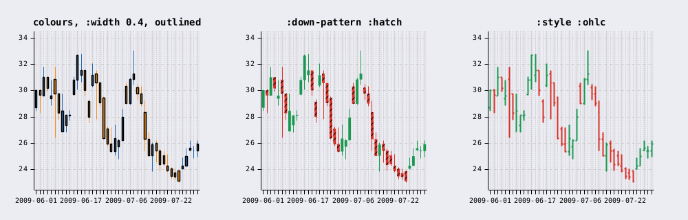
A pattern on the up candles and more room above and below the prices (:padding):
(plot/render-image {:data ohlc :mapping {:x :date :open :open :high :high :low :low :close :close}
:charts [(chart/candlestick {:up-pattern :dots :pattern-color :black :padding {:y [0.3 0.3]}})]
:labels {:title ":up-pattern :dots, :padding {:y [0.3 0.3]}"}}
{:width 700 :height 340})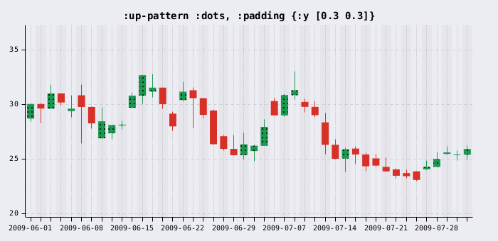
Shared options: Data and mapping (:data :mapping).
source: notebooks/reference/charts_series.clj